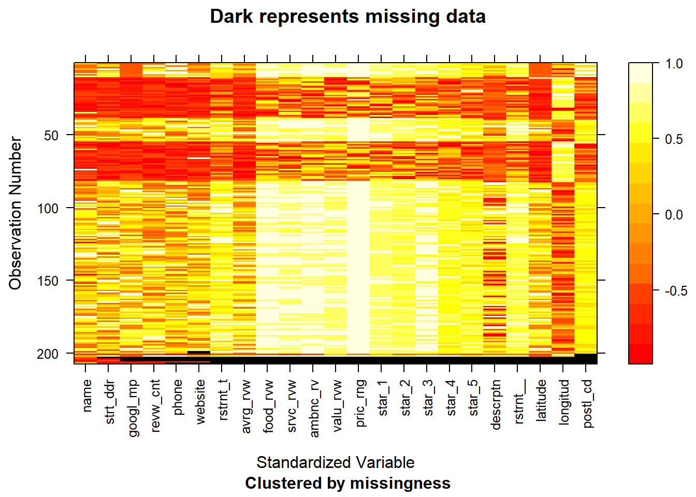

Chapter 3 Missing values
First, we load the data and show the first couple lines here.
## X name food_review ambience_review value_review
## 1 1 Cafe Du Soleil 4.2 4.4 4.1
## 2 2 Elea 4.7 4.5 4.2
## 3 3 Nice Matin 4.4 4.3 4.2
## 4 4 Serafina 105 4.3 4.2 4.1
## 5 5 Bodrum Turkish Mediterranean 4.6 4.3 4.5
## 6 6 French Roast Uptown 4.4 4.4 4.2
## service_review price_range review_count average_review restaurant_main_type
## 1 4.2 $30 and under 905 Reviews 4.3 French
## 2 4.5 $50 and over 573 Reviews 4.7 Greek
## 3 4.5 $31 to $50 2840 Reviews 4.5 French
## 4 4.4 $30 and under 142 Reviews 4.4 Italian
## 5 4.5 $30 and under 988 Reviews 4.6 Turkish
## 6 4.4 $31 to $50 223 Reviews 4.4 French AmericanThen, we check the number of NA’s in each column.
## X name food_review
## 0 0 10
## ambience_review value_review service_review
## 10 10 10
## price_range review_count average_review
## 0 0 0
## restaurant_main_type
## 0There are 10 NA’s in each review columns. To find out where they are, we plot the missing patterns in data by rows with mi package.

From the plot above, we can see that all 10 missing values are in the same rows, so we decided to remove these rows by using na.omit() function. And we check again to make sure there are no NA’s in the dataset.
## X name food_review
## 0 0 0
## ambience_review value_review service_review
## 0 0 0
## price_range review_count average_review
## 0 0 0
## restaurant_main_type
## 0